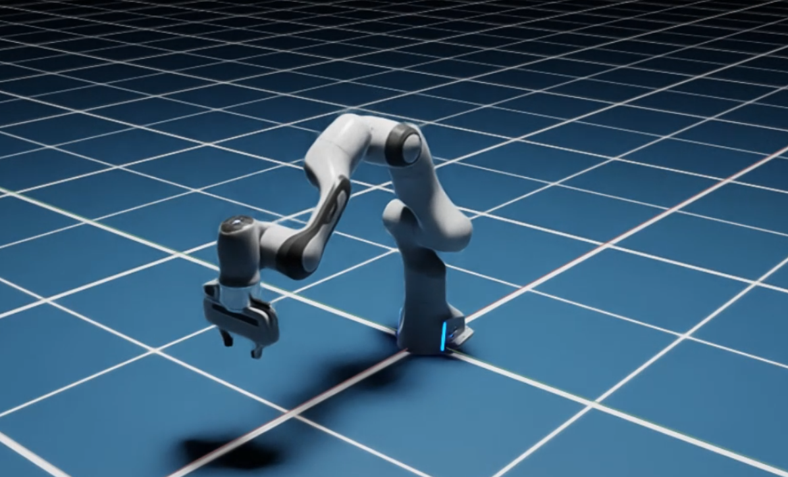
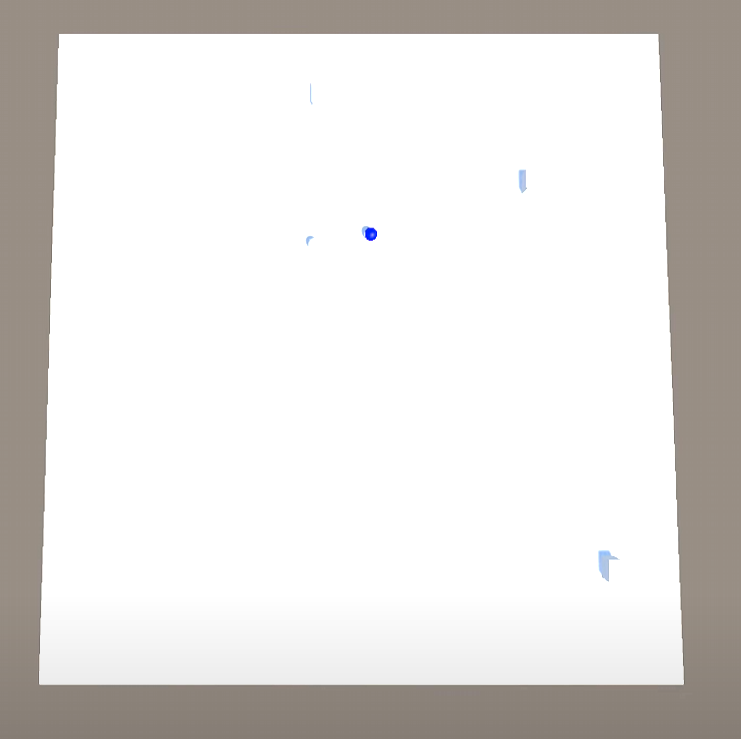

RobotBallet GoogleDeepmind
My attempt at replicating the research presented by GoogleDeepmind in MuJoCo.
Franka Panda MuJoCo Dance
A simulation using MuJoCo and GoogleDeepmind XML files to simulate dancing franka panda robots.
Franka Emika Panda Robot
Python script that maps out the specific path the robot takes in the landing page of the website.
Reinforcement Learning using Isaac Lab and Sim
Using reinforcement learning we teach the manipulator to reach an end goal pose matching the end goal orientation.
Game AI
Agentic AI that follows player interacting with the world environment to achieve its goal.
A* Path Planning

A demonstration of A* path planning algorithm that dynamically renders its shortest path avoiding obstacles.
Object Detection for VR

A pipeline that gathers images from google maps API and converts them into VR friendly formats that runs an objection detection model that I labled for flammable objects within the picture.
Particle Fluid Simulation

Simulation of fluid dynamics using particles written in C++.
Computer Vision Projects

Various projects dealing with computer vision that I am working on. Currently I have a facial detection script available for use.